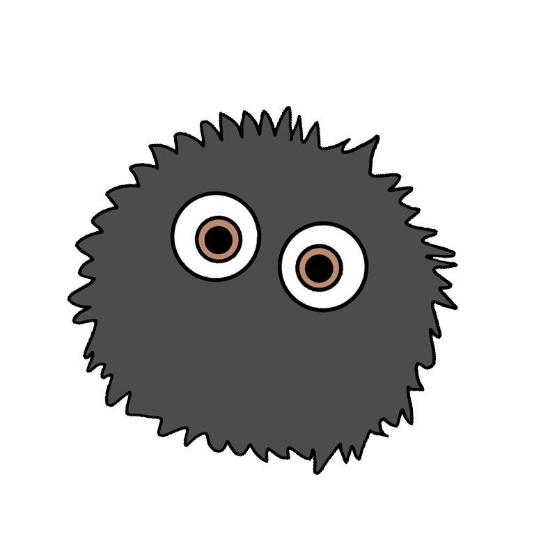
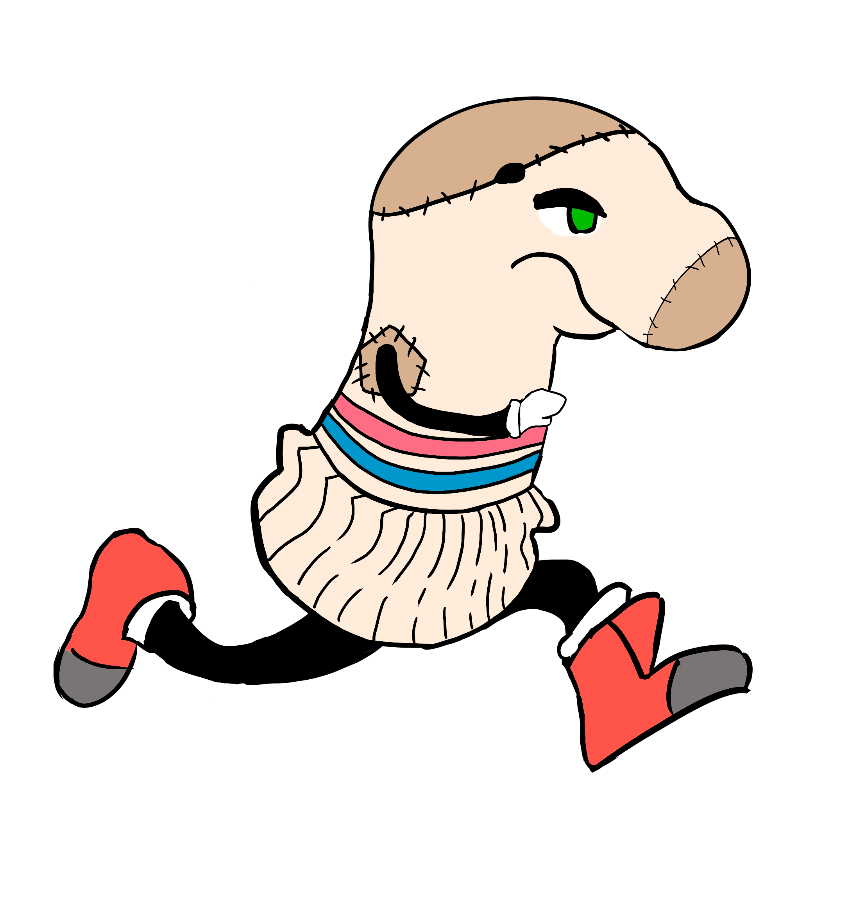

<main>
    <section>
        <div
            class="banner-container text-center text-white d-flex flex-column align-items-center justify-content-center">
            <h1 class="display-4 fw-bold text-uppercase">Documentación: Fases de desarrollo</h1>
            <p class="lead">Explora las etapas esenciales en el proceso de desarrollo de <em>Escape from the
                    Laundry</em>.</p>
            <div class="image-overlay">
                
            </div>
        </div>
    </section>
    <section class="lista-fases">
        <app-lista-fases class="table-container"></app-lista-fases>
    </section>
    <div class="image-superpuesta">
        
    </div>
    <section>
        <app-banner-contacto></app-banner-contacto>
    </section>
</main>